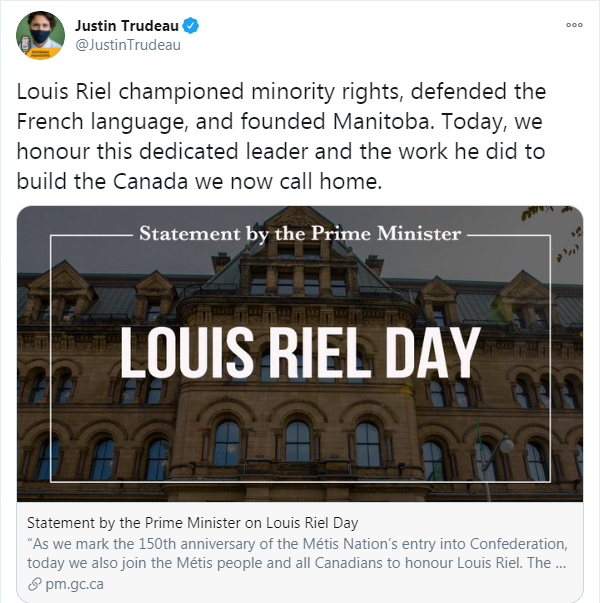
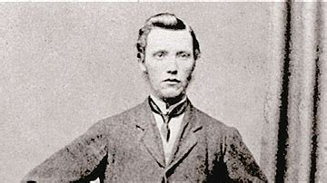
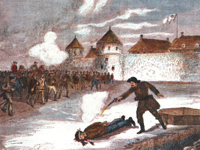
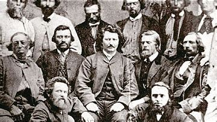
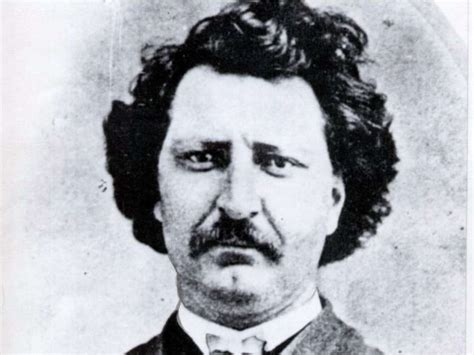

Well I happened to see this today, and it of course, demands discussion.

Let's head on over to that
statement page:
TDC_ARTICLE_START
The Prime Minister, Justin Trudeau, today issued the following statement on Louis Riel Day:
TDC_ARTICLE_STOP
I honestly did not know there was such thing as "Louis Riel Day." There definitely shouldn't be, but I'll get to that later.
TDC_ARTICLE_START
“As we mark the 150th anniversary of the Métis Nation’s entry into Confederation, today we also join the Métis people and all Canadians to honour Louis Riel. The Founder of Manitoba and an elected Member of Parliament, Louis Riel was a great defender of minority rights and the French language. In addition, his struggle to preserve Métis culture paved the way for the Canada we know today.
TDC_ARTICLE_STOP
This is not the part of the article where I fly into a blind rage at someone defending the murderous Louis Riel. That comes later. This is the part where I have to point out the absurdity of projecting the fake and gay politics of Anti-Whiteness onto specific people in the past. Louis Riel was a Metis Nationalist, that's it. He wasn't a "defender of minority rights and the French language."
Justin Trudeau
TDC_ARTICLE_START
“This year, the global COVID-19 pandemic has highlighted the unique challenges that Indigenous peoples and communities face. That is why the Government of Canada continues to work closely with Métis Nation partners to better respond to the pandemic’s challenges through distinctions-based community solutions. In recent months, we launched the Indigenous Community Support Fund, which is helping support Métis organizations and communities during the pandemic. The government’s response to this health crisis also includes support for Métis businesses through the Indigenous Community Business Fund, as well as funding for Métis Nation early learning and childcare facilities and Métis students pursuing post-secondary education. In addition, the government has allocated funding to respond to urgent mental health needs in Métis communities.
TDC_ARTICLE_STOP
Of course, white people get nothing. First of all, I resent being refered to as non-indigenous. I was born here, and am therefore indigenous. That some Abo walked over an icebridge from Russia a few thousand years prior is irrelevent.
More to the point about Louis Riel. There are two aspects to the Louis Riel story that, I believe, all goyim must know.
The first is best summed up with a passage from Tom Flanagan's "Riel and the Rebellion: 1885 Reconsidered,"
TDC_ARTICLE_START
I had earlier accepted that the Métis had serious unresolved grievances;The government of Canada never gave a satisfactory response to the complaints; the Riel resorted to violence only after legal means of action it failed; and that he received a trial of questionable validity before being executed by vengeful government. As I sifted the evidence this became less and less convincing to me until I concluded that the opposite was closer to the truth: that the Métis grievances were at least partly of their own making; that the government was on the verge of resolving them when the Rebellion broke out; That Riel's resort to arms could not be explained by the failure of constitutional agitation and that he received a surprisingly fair trial.
TDC_ARTICLE_STOP
Historian Tom Flanagan
This is as expected. In the same way that everybody is more socially or racially right wing when under the cover of anonymity, historians have a more pro-white opinion of historical events the longer they actually look at them. This is because history, or rather fake history, is a weapon of propaganda.
The second aspect that all goys should know, is the character of Louis Riel himself, best summed up with not simply the murder of Thomas Scott, but the cruel, malicious, and sadistic nature of Riel and his men. Most propagand you will read on this subject won't actually explain the manner of death, simply glossing over his execution. As one example of such propaganda from
CBC's "A People's History":
TDC_ARTICLE_START
Riel's actions to date had been moderate, but with Scott he overreacted and appointed a military tribunal to try the prisoner for treason. On March 4, 1870, Scott was convicted, sentenced to death and executed by a firing squad in the courtyard of Fort Garry.
It was Riel's greatest miscalculation and an act that would cost him the moral high ground. Protestants in Canada's largest province, Ontario, reacted with anger. There were calls for Riel to be hanged and the Ontario government offered a bounty for his capture.
TDC_ARTICLE_STOP

Thomas Scott
Oh you see goy, he just did a little bit of an overraction. No need to get into details at all. Just know that we are admitting he fucked up but won't tell you exactly what happened. But that's not because we're trying to hide anything, goy, it's for some other reason.
Here's an actual in depth summation of the execution of Thomas Scott, a summary from
The Canadian Encyclopedia:
TDC_ARTICLE_START
Meanwhile, Thomas Scott remained in jail, where he become a nuisance. He complained about conditions and constantly shouted violent threats and racist insults at his Métis guards. They chained his feet and hands, but he kept on. On 28 February, after hitting a guard, two other guards dragged Scott outside and beat him until a member of Riel’s government stopped them. Riel visited Scott and, speaking through a hole in the door, tried to calm the man but Scott shouted more insults.
On 3 March, Scott was charged with insubordination and treason by a six-man council. He was not allowed a lawyer and, because he did not speak French, he did not understand the evidence against him. Witnesses were not cross-examined. At the end of the trial, Riel addressed Scott in English and summarized what had happened. One member of the council voted for acquittal and another for banishment. Four declared Scott guilty and said he should be executed by firing squad (see Capital Punishment).
A minister, a priest, and Donald Smith asked Riel to spare Scott’s life, but he refused. Riel believed that the trial and Scott’s execution would demonstrate the power of his government to the people of Red River and, as he said to Smith, “We must make Canada respect us.”
At one o’clock on 4 March 1870, Scott’s hands were tied behind his back and he was escorted from his cell to the courtyard outside. With Riel watching, Scott knelt in the snow, and a white cloth was tied to cover his eyes. Scott shouted, “This is horrible. This is cold-blooded murder.” Six Métis men raised their muskets, but when the order to fire came, only a few shots rang out. Scott was hit twice and crumpled to the ground but was still alive. François Guillemette, a member of the firing squad, stepped forward, withdrew his revolver, and ended Scott’s life.
TDC_ARTICLE_STOP

Guilmette's depiction of Thomas Scott's execution
Scott was beaten, given a sham trial in a language he couldn't speak without a lawyer, then executed. And this take, while already very revealing towards Riel and the Metis, isn't half of it.
Here's a much better explanation, on Wikipedia of all places, a summation of the work of historian J.M. Bumstead.
Wikipedia:
TDC_ARTICLE_START
Other witnesses reported that he had been yelling wildly that his execution was unjust and that his execution was murder. The weapons that were used by the firing squad were ordinary hunting weapons (supposedly muskets) and it was observed that the men who shot these guns were intoxicated. At the time of fire, the men in the firing squad stood 60 meters away from Scott. It was also debated whether or not Scott died immediately when shot by the firing squad.
Métis leader John Bruce claimed that only two bullets from the firing squad actually hit Scott, wounding him once in the left shoulder, and once in the upper chest. A man came forward and discharged his pistol close to Scott's head, but the bullet only penetrated the upper part of the left cheek and came out somewhere near the cartilage of the nose. Still not dead, Scott was placed in a makeshift coffin, from which he was later reported to cry:
"For God's sake take me out of here or kill me."
John Bruce said that he was left there to die of his injuries.
A similar account was reported by Reverend George Young, who was told by Major George Robinson that Scott was confined to a roughly made coffin on the presumption that he had died when shot on by the firing squad. Robinson said that five hours later he and Riel entered the room where Scott's coffin was being kept and heard Scott beg for death. Robinson fled the room, Riel closed the door and, a few moments later, Robinson heard a shot and presumed that Scott was then dead. This account was cast into suspicion, though, as Riel had fired Robinson as the editor of New Nation on 19 March 1870, so it remains unclear whether or not these accounts are based in fact or acted to defame Riel in retaliation for Robinson's dismissal.
TDC_ARTICLE_STOP
So basically Louis Riel and his band were exactly what you'd expect. A bunch of drunken parasites, with no legitimate claim to the land that they had stolen. Violent and unreasonable.

Louis Riel with Metis
In contrast, Thomas Scott was a great man. Here's another excerpt from that Canadian Encycopedia article:
TDC_ARTICLE_START
When he arrived in Red River, Scott joined a construction crew building the Dawson Road between Red River and Fort William. In August, it was discovered that the project’s superintendent and paymaster, John A. Snow, had been underpaying the workers. Scott led a gang that dragged Snow to the river and threatened to throw him in. In November, Scott was charged with assault, fined £4 and fired.
...
Meanwhile, Scott had met the 29-year-old doctor and entrepreneur John Christian Shultz. Shultz led the Canadian Party, a small group of English Protestants who wanted Red River to be taken over by Canada and led by English Protestants. In early December, 67 Canadian Party followers gathered at Shultz’s warehouse in Lower Fort Garry to plan an attack on the Métis government.
...
On 9 January, Scott and 12 other men escaped. He and Charles Mair found snow shoes and somehow walked 103 km through a blizzard to Portage la Prairie. A month later, still suffering from frostbite, Scott joined Canadian Major Charles Arkoll Boulton and about 60 others who marched through cold and snow, intent on capturing Upper Fort Garry, freeing the prisoners, and overthrowing Riel. They were joined along the way by another 100 men armed with muskets and clubs.
TDC_ARTICLE_STOP
We can see here that Thomas Scott was a man of action. A common man, some would say peasant, who had dared to exercise power in this world on behalf of his people. And I do mean that both racially and culturally. What we need is more men like Thomas Scott.
As far as the actual plot of Louis Riel's life, that's irrelevant. He isn't promoted by our enemies because of trivia details, but rather because he serves as a useful way to racially attack White People. That he murdered Thomas Scott, a man in the image of the White Peasant, or what we might nowadays call the White Working Class, is in fact a strong plus in these people's eyes. So understand what's being talked about when they talk about Louis Riel.
